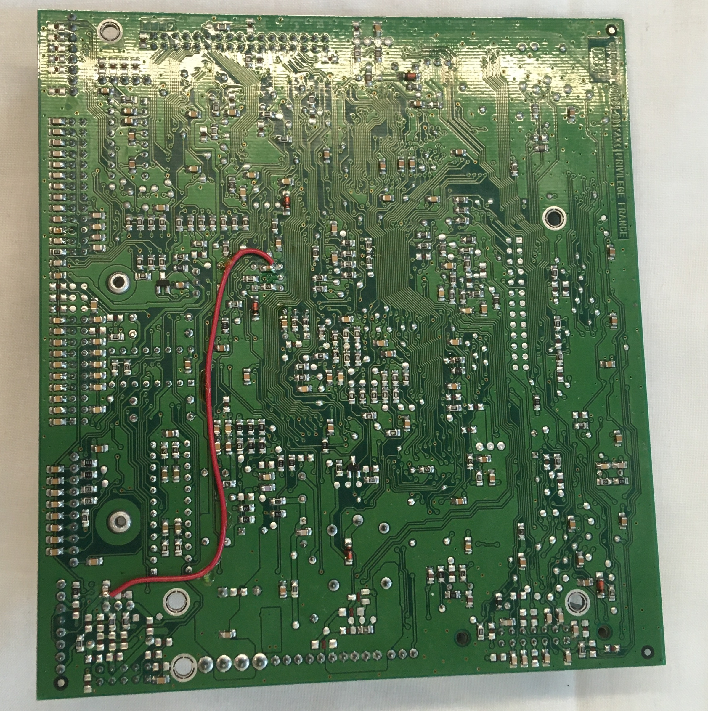
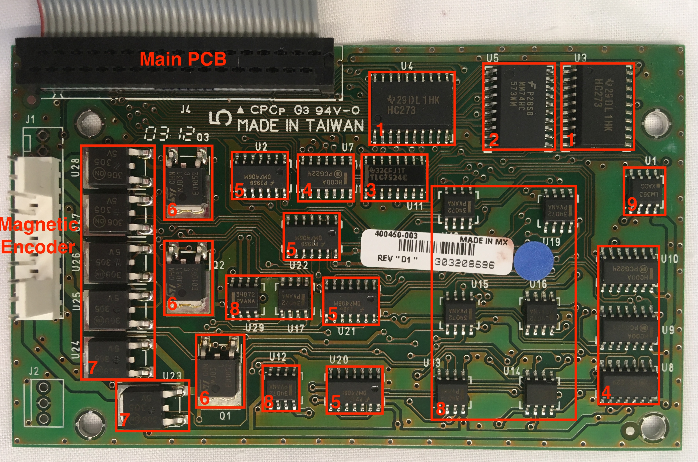
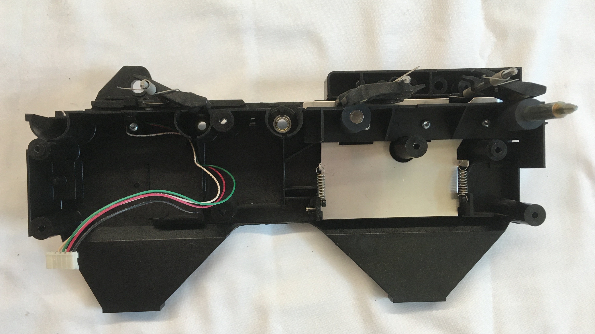

Foreword
Of all my teardowns to date, this is the most thorough teardown report I have ever written. It took me about a month to put together during my free time after work. It's fairly lengthy, but I tried to make it manageable by organizing it into sections for different units in the printer according to the order in which I examined each unit. The length of the report is due in part to the complexity of the ID printer, but primarily owing to the wealth of resources available for my study of this device. The technical manual intended for those attempting maintenance and repair on the machine was a particularly helpful resource. Additionally, the product labels on many of the electronic components allowed me to find their associated datasheets online. With all these resources at my disposal, I was able to learn a lot and hope to share some of what I've learned through this report.
Introduction
The Eltron P310C ID card printer was yet another lucky find rejected to the junk piles of Medford. As the name suggests, the machine can be used to print identification cards for enhanced security in a variety of organizations such as schools, hospitals, and commercial businesses. Blank cards (made of PVC or a PVC based composite) are loaded into the blue card holder on the right side of the printer and a color ribbon roll is mounted on the printer interior, stretched between a pair of plastic shafts. Through a 25 pin connector and associated software driver, a computer can be interfaced with the printer to send card designs to the printer for production. Unfortunately, the printer came with neither cards, color ribbon rolls, nor connectors so I was not able to test it (for purely academic purposes of course).
The printer applies color to the initially white cards using a thermal print head through one of two methods—dye sublimation or resin thermal transfer. In dye sublimation, the print head sublimates the color ribbon into a vapor that is then deposited on the card surface. In resin thermal transfer, the print head melts the monochrome ribbon into a liquid that is then deposited on the card surface. Resin thermal transfer printing results in much more durable prints, but limits the print color to just a single option—usually black. For this reason, resin thermal transfer printing is often used for barcodes and important identification information, while dye sublimation is used to produce colorful designs and images. Both printing methods can be achieved with the Eltron P310C by loading the appropriate color ribbon roll and selecting the desired setting in the driver software.

Original Printer

ID Card Entry
ID Card Exit
Printer Back

Closeup of Label on Printer Back
Examining the Eltron P310 manual, some important information can be decoded from the part number, "P310C-OM1OP", written on the label. The "C" following the printer name indicates that the printer is designed to print in color rather than being limited to monochrome. The set of characters following the hyphen indicates that the printer is not capable of programming smart cards (with embedded chips), is capable of magnetically encoding cards, must have high coercivity (HiCo) magnetic cards loaded in with magnetic stripe side facing down, has standard memory, and uses a parallel (as opposed to serial) computer interface connection. High coercivity cards are used when the cards are expected to receive high use and possess stronger magnetic fields (measured in Oersteds for this application) than low coercivity (LoCo) cards.
Printer Interior
Use Instructions Label on Interior
The images on the label communicate instructions for the following tasks from left to right: color ribbon loading, card loading, and cleaning roller replacement. Highlighting the active pieces in blue and providing warnings in yellow while leaving the rest of the instructions in black and white was a helpful tactic for emphasizing key takeaways from the instructions and made the images fairly intuitive to read.

Card Printer Ribbon Label
When printing via dye sublimation, a YMCKO color ribbon is typically loaded into the printer. YMCKO stands for five steps in the printing process: yellow, magenta, cyan, black, and overlay. The YMCKO ribbon contains repeating sections of YMCKO panels in series. The card slides under the print head to receive a coating and is then pulled back before the print head to receive the next coating. As with paper printers, the primary colors of pigment (yellow, magenta, and cyan) can be used to create all matter of colors on the card. The black layer is usually saved for card graphics requiring monochrome resin thermal transfer printing. The final coating, the overlay, adds a clear protective layer over the card to preserve its life. Each of these layers is only a few microns thick.
Status Indicator Lights
The status indicator lights located on the front cover of the printer are used to communicate basic status updates to the user. The adjacent blue panel button also allows the user to execute some basic functions such as clearing errors (indicated by the status lights), initiate the cleaning process, or initiate a test print.

Exterior View
Examining the simple one-sided PCB which holds the status indicator lights and panel button, it's clear that all the computation for these processes is directed off to a separate board to which the wires leaving the PCB are directed. Looking at the traces, it's interesting to note that the resistor only appears to be used for the green LED. Maybe the green LED has a substantially different forward voltage (voltage required to light the LED when current travels forward through the diode), than either the yellow or red LED. In addition to labelling each component, the polarity of the LEDs is labelled on the PCB to ensure proper installation where "A" stands for anode and "K" stands for cathode. I'm not sure what the purpose of the missing component labeled "CT1" would be. Possibly that component was used for a different customization of the printer and CT may have stood for "connection" or "common terminal".

PCB Back View

PCB Front View
Large PCBs
Behind the back cover of the ID printer lies two large PCBs, each packed with components. The larger main board controls the printer action as a whole while the smaller side board controls the magnetic encoding capability of the printer. Wires leading from different devices and satellite PCBs (including the magnetic encoding PCB) all lead to the main control PCB to receive instruction or provide information collected from sensors.

PCB Storage Under Printer Cover
Beneath the printer body lies another large PCB storing the power distribution board for the printer. This board takes in power from the outlet and converts it into a form that can be managed by the main control board before it is further manipulated into other forms to be distributed across different electrical components in the printer.

Exploded View with Main and Power PCBs
Main Control PCB

Main PCB - Top View (Ports Labelled)

Main PCB - Top View (Components Labelled)
Coldfire MCF5206 Microprocessor (datasheet)
Trying to make sense of the over 400 page long datasheet was overwhelming and more than I was willing to slog through, but it provided some basic information of note. The microprocessor has 160 pins including a clock input, i2C compatible Motoral Bus (M-Bus) clock and data pins, two pairs of DUART transferring and receiving pins, interrupt control pins, timer in and out pins, chip select pins, and general purpose input/output (GPIO) pins. Computational information is stored on board in the form of cache and SRAM (static random access memory), and can also be stored off board in the form of DRAM (dynamic random access memory). Given all these capabilities, this part maybe would be more aptly named a microcontroller instead of a microprocessor.
ISSI IS41C16100 DRAM (datasheet)
The DRAM can contain 16 MBIT (2MB) of information with an accelerated processor cycle access method called EDO Page Mode. Memory access time is an important parameter for memory units such as this one as accessing information from memory takes much longer (more processor cycles) than running tasks on the processor.
ON Semiconductor HCT574A Octal Register (datasheet)
The full name of this component in the datasheet is actually "Octal 3-State Noninverting D Flip-Flop with LSTTL-Compatible Inputs". There's a lot to unpack in that name. "Octal" indicates that the register includes eight "D Flip-Flop" circuits. The D-type flip-flop circuit is a type of circuit using several logic circuits (i.e. AND, OR, NAND, NOR) to store or latch onto a binary value (1 or 0) even when the input changes. Each flip-flop will only take in a new value during the next clock cycle triggered by a clock pin connected to the register. I found this YouTube video helpful when trying to learn about D-type flip-flops. "3-State" indicates that the outputs can be high (1), low (0), or a high impedance state which effectively disables the output from affecting anything downstream (i.e. disconnected from output bus). This special high impedance state is triggered on all flip-flops when the output enable pin on the register is set high. "Non-inverting" means that when data is read in, the same signal is then sent out. An inverting register would flip all of the binary input data, 1s would become 0s and 0s would becomes 1s. "LSTTL" stands for Low Power Schottky Transistor-Transitor Logic and likely some modification was required to make the register compatible with this more advanced lower power transistor-transistor logic (TTL) as compared to previous forms of TTL. TTL—which includes AND, OR, NAND, and NOR logic—forms the basic foundations for all computer operations. These conditional logic gates are each composed of a pair of transistors, hence the name "transistor-transistor logic".
Fairchild Semiconductor HC574 Octal Register (datasheet)
The full name for this component is "Octal D-Type Flip-Flop with 3-STATE Outputs". Now that we know what those words mean it's not quite as scary to seem them crop up. As a reminder, since the register contains eight flip-flop circuits, it can store "eight bits" or "one byte" of information. Although the name is slightly different, I wasn't able to perceive any functional differences between this register and the previous HCT574 register from the datasheets. Fairchild Semiconductor has since been purchased by ON Semiconductor.
ON Semiconductor HC573 Octal Transparent Latch Register(datasheet)
The full name for this component is "Octal 3-State Noninverting Transparent Latch". This name sounds fairly familiar with the exception of "transparent latch". As with the previous registers, this register latches onto values to store them. However, instead of taking in new values at the rising edge of the clock signal (as it moves from low to high) this register takes in new values whenever the latch enable pin is set to high. In effect, if the latch enable pin is held high then the latches appear transparent to the incoming data. In other words, the input will move right through the latch and change the value of the output. This register is otherwise the same in all other respects to the previous registers.
Nexperia 74HC165 PISO Shift Register (datasheet)
Like the previous registers, this register contains eight D-type flip-flop circuits. However, since this register is what's called a "shift register", each flip-flop circuit is connected to the next so that values can be fed in series down the cascade of flip-flop circuits. This shift register is a parallel in-serial out (PISO) shift register. This means that data can be fed in through parallel lines into each flip-flop circuit and then sent off all together in series on a single line. In addition to PISO, there are also SIPO, SISO, and PIPO shift registers. Despite taking in data in parallel and sending it out in parallel, the registers discussed previously would not be considered PIPO shift registers as they do not shift the data before sending it out again. These PISO shift registers are potentially used to expand the capability of the general purpose input/output (GPIO) pins on the microcontroller to accomodate a greater number of input devices. This is possible since the readings from eight input devices can be recorded in parallel but then sent all together on one line to the microcontroller in series.
Texas Instruments HCT00 Quadruple NAND Gate (datasheet)
As the name would suggest, this component contains four independent, two-input NAND gates. As a reminder, the result of this NAND logic is that a low signal is only output if both inputs are high. In all other cases, the output is high. It's worth noting that these logic conditions can be constructed in ways other than TTL. For example, they can also be built using diodes or even using a combination of diodes and transistors. I would assume that the logic components on this PCB are also constructed using TTL, but I can't say for sure.
Nexperia 74HCT32D Quadruple OR Gate (datasheet)
This component contains four independent, two-input OR gates. As a reminder, the result of this OR logic is that a low signal is only output if both inputs are low. In all other cases, the output is high.
Texas Instruments LS00 Quadruple NAND Gate (datasheet)
Like the HCT00, this component also contains four independent, two-input NAND gates.
Analog Devices AD8403 Digital Potentiometer (datasheet)
When I think of potentiometers, I typically imagine a knob connected to a component whose resistance varies as I twist the knob. However, this potentiometer is digital instead of mechanical like the knob. The variable resistance of the digital potentiometer is controlled by mapping a number code sent in binary through serial input to a resistance level. This component contains four independent, 256-position, digital potentiometers.
ST Microelectronics LM317 Adjustable Voltage Regulator (datasheet)
The adjustable voltage regulator can be used to produce output voltages between 1.2V and 37V when controlled using a variable resistor. Given the proximity of the digital potentiometers it seems possible that the digital potentiometers are used to control the output voltage of the voltage regulator. However, the proximity of other components related to driving the motors (of which there are four) in the printer would seem to indicate that the digital potentiometers (of which there are also four) are involved in driving the motors. The motors require 18V while the PCB hosting these control components is mostly running at 5V, seeming to indicate that the voltage regulator is somehow also involved in the motor operation to step-up the voltage for them. Why then is there only one voltage regulator and why isn't the step-up from 5V to 18V set with a fixed resistor attached to the voltage regulator? One potential explanation is that only one motor is controlled at a time and its speed is controlled by adjusting the voltage supplied to the motor.
Analog Devices ADM202 CMOS Driver/Receiver (datasheet)
The CMOS driver/receiver can transform a 5V input to a +/-10V output using a switching power supply type circuit. According to the technical manual, this board was responsible for the serial input/output communication with the computer connected to the board via the 25 pin connector. Unlike the tight surface mount appearance of many of the other ICs on this board, the through hole mounting of this component and its thicker body make it stand out along with a few other similarly shaped boards. Such a board with a rectangular body and parallel rows of pins on either side is often described as a Dual In-line Package (DIP). I'm not completely sure why, but the name DIP somehow sounds much more friendly and inviting than IC. Maybe it's because you can say it without having to spell it out.
ST Microelectronics L293B Push-Pull Four Channel Driver (datasheet)
The primary function of a driver is to control a high power (high voltage and high current) supply using low power logic signals. "Push-Pull" indicates that a push-pull amplifer circuit is included in this component to raise the output current so that the driver can output high power. The functionality of the push-pull and driver circuits are founded in transistors. For example, one transistor alone could be used as a driver by opening and closing a high power line in response to a control signal. A typical application of a driver is to drive motors—a high power application—using logic signals coming from a low power microcontroller or some such device. The driver can drive the motors forward, backwards, or not at all. As there are four motors in the printer, it would seem likely that this four channel driver is used to drive the motors. This hypothesis was confirmed upon later inspection of the over 100 page technical manual for this product. What an outstanding resource that technical manual was!
Texas Instruments LM339 Quad Differential Comparator (datasheet)
As the name would suggest, this component contains four comparators—each of which is used to compare two input voltages. Typically, voltage comparators are used to detect a digital signal such as one being emitted by a sensor. When the voltage coming from the sensor is greater than some set reference voltage, then the comparator outputs a positive voltage. On the other hand, when the voltage coming from the sensor is less than the reference voltage, then the comparator outputs a negative voltage. And finally when the two input voltages are approximately equal, then the comparator outputs zero voltage. As there are a number of sensors in the printer, it's possible that the purpose of the comparator is indeed for sensor state detection. One final interesting note from the datasheet of this component is that it falls under a class of similar quad differential comparators with the LM339 requiring the most limited operation temperature range of 0-70 degrees Celsius. This seems like a fair choice for the designers of this product to make as the office environment in which these ID printers are used will always stay well within that temperature range.
Nexperia 74HC04D Hex Inverter (datasheet)
Of all the components mentioned so far, the hex inverter is one of the simplest. As one could easily derive from the name, this component contains six independent inverter circuits, each having an input and output. The output is simply the inversion of the input signal. Put in a high (1) and get out a low (0), and vice versa. As with many circuit components, the inverting operation is also founded in transistors. It's interesting to note how the model numbers of several of the logic ICs begins with 74. This is because these chips are all a part of the 74 logic chip series.
Fairchild Semiconductor 74VHCU04 Hex Inverter (datasheet)
As with the 74HC04D, this component also contains six inverter circuits. The board pinouts are identical, but there's likely some difference between the two hex inverters that's escaping my analysis.
Omron G5LE Power Relay (datasheet)
Like drivers, relays are also used to control the opening and closing of high power lines with low power inputs. However, in relays the low and high power lines are electrically isolated as opposed to being connected through a transistor. Therefore, relays are used when high power spikes are more likely which could damage the control circuit if the switch was not electrically isolated. Given it's large size, I would assume that this relay uses a mechanical switch to isolate the two circuits. For a mechanical relay, the low power line can be used to drive an electromagnet causing a nearby metallic lever to rotate and connect the high power circuit. There are also solid state relays which rely on a light and light sensor to electrically isolate the circuits. As this relay is a "one-pole" relay, it only commands one high power line. Given that the heater likely requires high power and the heater port is adjacent to the relay, I would assume that this relay is used to control the power supply to the heater.
I examined many of the ICs on this board in great depth, but not all of them. For many of the ICs, I either couldn't read the label or find information about the product by looking up the model number on the label. Furthermore, there were many other components besides the ICs which I haven't even mentioned. So before I conclude the discussion of the main PCB, I'd like to mention a few important components on this board. There are also several spots on the board that don't seem to be in use. These locations are possibly reserved for components used in other configurations of the printer. For example, there is a large MOSFET type spot with solder pads tinned, but empty. Additionally, a few of the ports weren't in use. Most of these devices are CMOS type devices but there are also many other forms of electronic logic like TTL.....CMOS stands for Complementary Metal Oxide Semiconductors and consists of complementary and symmetrical pairs of of p-channel and n-channel MOSFETs.
A large rectangular chip lies just below the Coldfire microcontroller with fine pitch connectors. Given these physical parameters and its proximity to the microcontroller, I would guess it's some sort of memory unit. At the bottom right corner of the board lies a long DIP with a heat sink attached on top. Not being able to read the label, I initially wasn't sure what this component was. Nonetheless it seemed likely that it was some sort of computational unit or driver given how hot it was evidently getting. Thanks to the technical manual for the product, it was identified as the driver for the stepper motor. To the right of the DIP with heat sink is another voltage regulator looking component (could also be a MOSFET). If it's a voltage regulator, maybe it's used to step up the voltage for the heater. To the left of the DIP with heat sink is a large capacitor (25V 6800uF). This capacitor is used to smooth the 24V voltage coming from the power supply circuit. Above and below the motor driver are four diodes. Given their proximity to the motor driver, I would expect that one diode is connecting to the driving signal for each motor. Given the large inductive load of the motors, they will cause a power surge when stopped as a result of the back EMF generated by the motor coils. To prevent this power surge from damaging the transistors in the driver, the diodes provide an alternate path for the current to travel and dissipate. There are also a pair of crystal oscillators used to track time. Why there are a pair instead of just one, I cannot say.
For the components who's labels I could read and interpret, many of them used a similar labelling scheme. Typically, the model number was printed on one line and a manufacturing code printed on the line beneath it. The manufacturing code usually consisted of some letters—likely the location of a manufacturing facility—followed by some numbers—likely the date that product was manufactured. This date was often reported using a year-week scheme. For example, 0309 at the end of the microprocessor label to indicate the 9th work week of 2003.
Main PCB - Bottom View

Closeup of Large Capacitor

Closeup of Processor

Closeup of Oscillator
The label on the oscillator is easy to read and fairly informative. The oscillator has model number FOX147-20 and resonates at a frequency of 14.7456 MHz. What they don't tell you on the label but that you can find on the datasheet is that this oscillator is produced by FOX Standard Crystals and is a parallel resonator with a load capacitance of 20pF. This load capacitance is important to consider when adding an oscillator to the circuit as its interaction with other capacitances in the circuit will impact the performance of the oscillator (in ways I know not how to explain).
Side PCB - for Magnetic Encoding
Side PCB - Top View
Texas Instruments HC273 Octal Register with Clear (datasheet)
Like the octal registers we've seen before on the main PCB, this register contains eight D-type flip-flop circuits. Instead of having an output enable pin to trigger a third high impedance output state, the register has a clear pin. When activated this pin clears the outputs all to low and will hold them there regardless of new incoming input data. This pin has an active-low configuration (as opposed to active-high) indicating that the clearing functionality is activated when the clear pin is held low.
Fairchild Semiconductor MM74HC573WM Octal Register (datasheet)
This component appears functionally identical to the ON Semiconductor HC573 Octal Transparent Latch Register. It also contains an output enable pin (called "output control" this time) to trigger the high impedance state at the outputs and a latch enable pin to trigger when data is latched on to, stemming the flow of data from input to output.
Texas Instruments TLC7524C 8-bit DAC (datasheet)
This Digital-to-Analog Converter (DAC) converts an 8-bit digital (i.e. binary) signal to an analog signal (i.e. variable voltage). The 8 bit nature of this DAC means that it can output an analog signal with resolution to 256 different voltage steps. This DAC is possibly used to produce an output signal to generate a magnetic field with the appropriate magnitude during the magnetic encoding process. The DAC uses the R-2R ladder structure to exhibit its function, while also possessing a register to latch onto and store the eight bits of digital data as the analog signal is being generated. The basic principle of the R-2R ladder structure uses a cascade or "ladder" of resistor connections with relative magnitudes R and 2R. Digital signals introduced earlier in this ladder will contribute less to the output voltage signal as the voltage they output is progressively divided moving down the ladder. In other words, the digital signals introduced first compose the least significant bytes of the output signal.
ON Semiconductor HC00A Quadruple NAND Gate (datasheet)
This quadruple NAND gate looks identical in pinout to the previous NAND gates discussed on the main control board. Each IC has 14 pins. Each NAND gate includes two input pins and one output pins, resulting in 12 pins for all four NAND gates. The final two pins are input voltage and ground pins.
Fairchild Semiconductor DM7406M Hex Inverter (datasheet)
This hex inverter looks identical in pinout to the previous hex inverter discussed on the main control board. Each IC has 14 pins. Each inverter includes one input pin and out output pin, resulting in 12 pins for all six inverters. The final two pins are input voltage and ground pins.
ST Microelectronics MJD31C NPN Power Transistor (datasheet)
There are many different types of transistors, but all make use of p-type and n-type semiconductors. P-type semiconductors are doped with certain compounds to have larger hole concentration than electron concentration while the opposite is true for n-type semiconductors. This results in the two types of semiconductors carrying different amounts of relative charge. In this NPN bipolar transistor, p-type semiconductor is sandwiched between n-type semiconductor as the name suggests. When no voltage is applied to the base pin of the transistor, current cannot flow through the transistor between the collector and emitter pins. However, when a small positive voltage is applied to the base pin, current is allowed to flow through the transistor from collector to emitter pins (convential current flow). On the other hand, its counterpart the PNP bipolar transistor only allows current to flow through the transistor when a negative voltage is applied to the base pin. It was interesting to note how this component was soldered to the board. Instead of soldering the middle pin of the transistor to a pad on the board, the middle was shortened and the conductive metal base of the transistor was soldered to the board. The datasheet described this manufacturing method as the "'base island' layout". This method appears slightly more difficult to assemble, but possibly results in better heat transfer properties away from the power transistor which is likely to get much hotter than a logical transistor as higher levels of current flow through it.
ON Semiconductor 5V Voltage Regulator
Although the numbered labels didn't return any information, the 5V label and component structure would seem to indicate that these products are 5V voltage regulators. An ON Semiconductor datasheet for 5V linear voltage regulators shows a very similar looking component seeming to confirm this hypothesis. The 5V voltage regulator functions by stepping down any voltage from some range—possibly 5-24V—down to approximately 5V. The outputs from these voltage regulators appear to be heading to the magnetic encoder on some thick high current traces. It seems odd to have voltage regulators when the rest of the board is already at 5V unless the power is supplied by the 24 voltage line heading to the main control board. The need for so many of these voltage regulators is possibly due to the current limitations of each voltage regulator. So instead of running a large current through one powerful voltage regulator, slightly smaller but still significant currents can be run through several voltage regulators in parallel. Since the magnitude of a magnetic field generated around current flow in a wire is proportional to the amount of current flow, it's possible that high current flow is required for the magnetic encoder to create a sufficiently strong magnetic field to read and write to the magnetic strip of the card.
ON Semiconductor 34072 Operational Amplifier (datasheet)
This operational amplifier (op amp) is likely used to amplify the signal output by the DAC to a higher voltage than those provided by the 5V binary logic input into the DAC. This would be accomplished through a negative feedback arrangment where the output of the op amp is connected via a resistor back to the inverting input. The value of this resistor determines the magnitude by which the signal is amplified through the op amp.
ON Semiconductor LM393 Dual Voltage Comparator (datasheet)
This voltage comparator is possibly used to detect if the magnetic encoder unit is overheating so that it can be shutdown safely before causing damage to the product. This seems a likely concern given the size of the high current traces feeding into the port where the magnetic encoder wires connect.
Side PCB - Bottom View
Power Supply PCB

Metal Cover for Power Supply Unit

Power Supply Unit
Introduction
The power supply PCB or power supply unit (PSU) converts high voltage AC power to low voltage DC power. It receives an AC input between 100 to 240V and produces a DC output at 24V and 3.3A. There are two sets of ground and power lines exiting the PSU, but they are merged to form just one set of ground and power lines once reaching the CPU. This product was produced by Analog Vision, a company known for PSU production with factories based out of Taiwan. The product is labelled as a switching power supply and having model number FUEA240 on the side of the large electrolytic capacitor. Researching this model online, I learned that the board is rated with an efficiency of 75%. In other words, it loses a quarter of the energy that passes through it to heat. This would explain why there is so much metal around this component and the ribbing on the metal cover which are likely used to help dissipate heat from this component. I've broken the power conversion process into four key steps: AC line filtration, AC-AC step down transformation, AC-DC rectification, and then DC-DC flyback conversion.
AC Line Filtration
Information about this PSU model online advertises its built-in EMI (Electro-Magnetic Interference) filter. The first step in filtering the AC signal coming from the wall outlet is an inlet with attached filtering circuit (datasheet). Looking at the circuit described on the label of the inlet filter, there appears to be an X-capacitor to the left of an inductive load and a set of Y-capacitors to the right. Based on the information provided in a helpful YouTube video on AC line filtering, I believe this schematic indicates that the filtering circuit contains both differential and common mode chokes. From my limited understanding, there is differential mode noise and common mode noise present on any AC line. Differential mode noise exists on the signal as it travels from either hot line to ground, but acts in opposite directions between the two lines. To the contrary, common mode noise exists on both lines and acts in the same direction. To reduce these two forms of noise, a set of filtering inductors and capacitors are used. To reduce differential mode noise on each line, a single-coil inductor called a differential mode choke is used on each line with the return path formed by capacitors called X-capacitors feeding from line to line or line to neutral. To reduce common mode noise across both lines, a double-coil inductor called a common mode choke is then used on both lines simultaneously with the return path formed by capacitors called Y-capacitors feeding from line to ground.
But the filtering process does not end simply at the inlet! There are another set of large inductors and capacitors on the left side of the board. Given the two-coil nature of the large inductors, I would be inclined to say that these are additional common mode chokes with the nearby gray film capacitors acting as Y-capacitors. It was interesting to note that the inductors were labelled with some number followed by "HI-POT". Looking up "HI-POT", I learned that a hipot test is a common type of test used to measure the dielectric withstand voltage of an electrical product. For these common mode chokes that means at what voltage does the white insulating piece between the pair of inductor coils fail and arcing occur between them. Following the path between the common mode chokes and the transformer used in the next step, there is a fat capacitor rated for 400V and 220uF. This capacitor is possibly used to further smooth the incoming AC signal before it enters the transformer.
AC-AC Step Down Transformation
The transformer block labelled with "Danger High Voltage" and wrapped in yellow tape is used to step down the voltage from 120V to some lower voltage. To what voltage I'm not sure exactly, but likely not 24V exactly as there is still a later voltage conversion step. Since the input voltage can be anywhere from 100-240V, the power supply circuit somehow must be able to sense the input voltage and adjust the voltage appropriately to always output 24V. The transformer is a static voltage conversion component as it will always reduce the voltage by the same ratio as its transformation capability is set by the ratio of the number of turns in the pair of coils. Conversely, the output voltage of the flyback converter—which will be discussed in greater depth later—can be manipulated dynamically with a PWM signal. Therefore, the transformer helps to step down the voltage some, but ultimately the flyback converter is necessary to bring the output voltage to exactly 24V.
AC-DC Rectification
This is the first power supply board I have seen that does not appear to possess the typical four diode full bridge rectifier. Instead, this PSU uses a silicon-controlled rectifier (SCR) to rectify the power signal. It does so by only permitting some amount of the positive voltage current of the AC line to pass through it. Unlike the full bridge rectifier which outputs current whether the AC is positive or negative, the SCR only outputs current when the AC is positive. This may sound similar to just using a single diode to rectify an AC signal, but in this case the flow of positive current through the SCR can also be controlled by inputs to its gate pin.
DC-DC Flyback Conversion
The flyback converter is used to adjust the voltage of the DC signal to bring it to approximately 24V to be sent off to the main control board. The flyback converter circuit is composed of a paired inductor, transistor, capacitor, diode, and PWM controller IC. The flyback converter is similar in function and principle to the buck-boost converter, another form of DC-DC voltage converter. However, the flyback converter uses a paired inductor in place of the singular inductor in the buck-boost converter. This has the advantage of allowing for multiple different voltage outputs, greater flexibility in voltage conversion by manipulating coil winding ratios, and electrical isolation between the input and output voltages.
When I first heard "paired inductor", I thought of transformers as this was one of the first components I learned about through my teardowns. Although both components contain a pair of inductors. Transformers are restricted to AC circuits where they are used to raise or lower the voltage. As the current alternates in the primary coil, the induced current in the secondary coil also alternates continuosly. Paired inductors are usually used in DC circuits where energy is first stored in the magnetic field of the inductor core through current flow in one coil. Then the current is halted in the first coil and the magnetic field stored in the inductor core induces a current in the second coil.
As with transformers, the ratio of the number of turns on the coil plays a role in the voltage conversion in paired inductors. Looking at the paired inductor though, it can be seen that the two coils both have six wrappings. Therefore, the magnitude of the output voltage is controlled solely by the ratio of time current is allowed to flow in the first coil to the time current is allowed to flow in the second coil, which together determine the strength of the magnetic field in the paired inductor.
Controlling this time ratio can be accomplished by using a PWM signal such as that output by the onboard Micro-Semi-Conductor (MSC) SG3842M PWM controller (datasheet). The controller adjusts the duty cycle of the PWM signal as necessary to ensure that an output of 24V is maintained at the output of the flyback converter. Together, the transistor and diode control when current is allowed to flow in each coil. The PWM signal sent to the transistor will open and close the circuit on the first coil controlling the time ratio that ultimately determines the output voltage.
I'm not sure how the reference voltage of 24V is set for the PWM controller, but I wonder if somehow the onboard potentiometer is used to set this 24V output. It appears as if the potentiometer was set manually through the use of a small screwdriver and then sealed with a wax stamp to prevent further manipulation of the voltage output settng after production. A nearby IC labelled CNX82A and produced by Isocom Components (datasheet) is also likely used to assist the PWM controller in maintaining a 24V output out of the flyback converter. This component is an optically coupled isolator or opto-isolator for short. It contains an infrared LED and phototransistor, allowing electrical signals to be passed through the component through the corresponding emission and detection of a light signal. This component is useful in electrically isolating circuits and is rated to electrically isolate RMS voltages across it as great as 5.3kV! Consequently, the opto-isolator is likely used to verify that the output from the flyback converter (electrically isolated from the PWM controller and rest of the circuit by the paired inductor) is indeed at 24V. This allows for feedback to the controller while still maintaining electrical isolation. Lastly, to smooth the triangular output signal from the paired inductor a large capacitor is used. Whenever the voltage of the output signal drops lower than the voltage across the capacitor, the capacitor discharges, thereby maintaining a higher and more consistent output signal. It's also likely that a large capacitor is used on the input to the flyback converter.
Conclusion
Several safety features exist in place on this power supply to stop supplying power to the main control board if the power were to spike. First, a fuse at the hot line entry will blow if its 3A 250V limit is exceeded. Second, an adjacent thermistor wrapped in heat shrink tubing is possibly what's known as PTC thermistor. The resistance of this type of thermistor increases as its temperature increases. Such a configuration protects against overly high current draws as these will cause the resistor to heat up and restrict the flow of current. When the thermistor cools down, it will once again allow current to flow. So in this sense it acts likes a resettable fuse. Furthermore, the final output voltage is also electrically isolated from the rest of the circuit.
It was interesting to note the strips of metal used behind the SCR and transistors to pull heat away from those components instead of a more typical finned-type heat sink. There were also a number of components labelled on the board but not soldered on such as an LED, some capacitors, and a thermistor. I wasn't able to identify what the circuit board labels BD or RSK stood for either. Another interesting note was the use of the green safety discharge line (i.e. neutral line) connected to the metal casing. These connections were called grounding lugs in the technical manual and serve to prevent conductive components in the printer from accumulating charge that could be dangerous to either the printer or anyone doing repairwork on the printer.
Closeup of Chokes

Closeup of Transformer and Transistor Heat Sink Plate

Closeup of Power Input
Closeup of Large Capacitor

Closeup of Paired Inductor
Entry Unit
The entry unit is used to bring blank ID cards into the machine and has a relatively simple design. Cards are stacked magnetic strip down in the card holder hopper transparent plastic piece. To bring in a card, the motor located at the bottom of the component drives a timing belt causing the roller located at the bottom of the card stack to begin rotating. Due to the somewhat adhesive nature of the rubber used for the roller this causes a card to be pulled into the machine through a set of cleaning bristles and card height lever arm. As the card height lever arm is rotated, more or less space can be provided for the card to travel through. This design isn't foolproof as it only obstructs cards that are too thick or a stack of multiple cards from passing, cards thinner than the desired setting would still be allowed to pass. Since this unit contains no sensor to communicate to the rest of the printer what thickness card is being inserted, it seems unlikely that the rest of the printer would be adjusting its process in any way to account for cards of different sizes. Instead, it's more likely the card height lever arm serves to reduce the likelihood of multiple cards being sent into the printer simulatenously which might jam the system.

Entry Unit - Back View

Entry Unit - Side View

Entry Unit Card Height Adjustment Slots

Setting for Thinnest Card

Setting for Thickest Card
Card Entry Unit Exploded View
Rollers
Many rollers exist throughout the printer with their fundamental purpose being to drive the ID card through the printer. Powering the DC gear motor at the entry unit, rotates the entry roller bringing the card into the system. After that, the card position in the printer is continuosly monitored by each step of the stepper motor which actuates a timing belt system covering the length of the printer. There are also a series of passive rollers which serve additional functions in the printer such as the cleaning rollers below. The upper cleaning roller is wrapped in typical commerical lint roller tape to pick up dust off the card before it has the opportunity to carry these contaminants deeper into the printer.
Card Cleaning Rollers

Closeup of Torsion Spring Securing Lint Roller
With just the torsion spring holding the lint roller in place, it can be easily removed and replaced as it accumulates dust over the course of printer operation. It's interesting to note that in addition to the card cleaning rollers, the manual states that the printer also comes with cleaning cards. The cleaning cards are supposed to be fed through the printer when the printer indicates that cleaning is required by flashing the orange and red status indicator lights. The cleaning cards are pre-saturated with cleaning fluid (likely isopropanol) to wipe clean the interior surfaces of the printer feed system including the print head, magnetic encoding station, and rollers.

Rollers Leading Up to Card Exit
At the exit of the print head lies a pair of rollers mounted side by side, each with a torsional spring forcing the roller down onto the passing card. These rollers are used to ensure the card makes good contact with the magnetic encoding unit for best encoding performance.

Rollers Removed
Disassembling Printer Body
Up until the printer body, the teardown had been accomplished solely using a small phillips screwdriver. To remove the metal backing which protected the mechanical drive system of the printer and where the main control PCB and magnetic encoding PCB had been mounted, a special hex star screwdriver head was required. After removing the backing plates and bolts connecting either half of the printer body, I was able to open up the printer body completely and expose all the printer components.

Metal Cover Requiring Special Screwdriver for Disassembly
Special Hex Star Screwdriver Head Required for Interior Disassembly

Full Product Exploded View
Printer Body Front Half
For the most part, the front half of the printer body simply contained complementary mounts for the components of the back half of the printer body such as bearing mounts for each roller shaft. Nonetheless, the front half of the printer body also contained a card entry detection sensor and it extended the range of the stepper motor timing belt system to cover the rollers near the printer exit.

Exposed Timing Belt System on Printer Front

Printer Body Front Half - Front View
Printer Body Front Half - Back View
I'm not sure what the purpose is of the spring loaded metal plate on the backing of the front half of the printer body. It's located at the magnetic encoding station and a card passing over its top edge would cause the springs to compress generating force upwards on the card. Therefore, maybe it acts in conjunction with the pair of torsional spring loaded passive rollers above to keep pressure on the card as it is magnetically encoded.

Printer Body Front Half - Front Exploded View

Printer Body Front Half - Back Exploded View

Card Entry Detection
Card Entry Detection Sensor
The card entry detection sensor is a LED-phototransistor optical sensor known as a slotted optical switch (datasheet). It can be thought of as a beam interrupt sensor, but in reality the light emitter produces diffuse light as opposed to a focused laser across its terminals. When an ID card passes between the two terminals of the sensor, it blocks the light shining from the LED in the top terminal (labeled E for emitter) from reaching the phototransistor in the bottom terminal (labeled S for sensor), causing the sensor output to change as the phototransistor switches either open or closed. When the signal coming from the phototransistor changes, it's change is detected by a voltage comparator. The digital output from the voltage comparator is then sent to the microcontroller communicating that a card has been detected at the printer entry. This solution to card detection would be fairly easy to implement in the design and likely produces consistent card detection results. That is, until someone decides to get tricky and start loading translucent or transparent cards into the printer.
Given the simplicity of this component, I decided to test its functionality for myself using an Arduino microcontroller. Below is a video showing how I was able to hijack the slotted optical switch for my own card detection. This could be a fun and useful sensor to include in my future projects.
Testing Slotted Optical Switch
Printer Body Back Half

Printer Mechanism

Printer Mechanism Exploded View
Introduction
The back half of the printer body contained the devices used in the primary operation of the printer—print head and magnetic encoder—and the mechanical assembly to drive those operations. From a mechanical perspective, this was the most exciting piece of the printer. A system of many shafts connected together by a timing belt driven by a flywheel and stepper motor drives the ID card through the printer. A belt and pulley system driven by a separate geared DC motor controls the rolling up of the used color ribbon as the print head moves through each panel of color. Yet another geared DC motor drives a cam to rotate the print head up during card travel and down during printing. A cam follower shaft mounted atop the cam raises the rollers located above the encoder during card travel and lowers them during encoding.
Embedded in the structure of this mechanical assembly is the intelligence to execute rhythmic movements at appropriate times as the card moves through the printer. The true intelligence of this product lies in its electronics though, so a number of optical sensors exist across the back half of the printer body to track movements of the mechanical assembly. All these sensors are LED-phototransistor optical sensors like that used to detect the card first entering the printer. In total, three of these sensors are used to track whether the print head is up or down, whether the print head is latched or unlatched, and how far the color ribbon has unwound.
Printer Mechanism PCB
The printer mechanism daughter board is a simple PCB with no onboard intelligence. Its function is instead to provide connection points for the many sensors and motors in the mechanical assembly so that information can then be sent back and forth through a compact ribbon cable. As a clear statement of its simplicity, this board is one side (i.e. copper traces are only drawn on the bottom). One sided boards are easier to manufacture, but they can be difficult for the board designer as space to draw traces is more limited. On a board with many components such as this, it is almost unavoidable that some of the traces will have to cross. Instead of using vias though, the designers of this PCB using little jumper wires and resistors in several locations to connect traces across the board. All of the sensor and motor connectors use a JST-type style with an asymmetric shape that only permits the opposing female ends to be inserted in one orientation. This ensures that the sensors and motors are not installed correctly during assembly of the printer.
Printer Mechanism PCB - Top View

Printer Mechanism PCB - Bottom View
Print Head
As I mentioned at the beginning, this printer utilizes both dye sublimation and resin thermal transfer methods of printing. Both methods require a heated print head to transfer dye from the color ribbon onto the ID card. The amount of heat applied to each element on the print head determines how much of that color will be saturated into the card at that location. For dye sublimation, the print head can apply dye at 32 steps of saturation (5 bits). Therefore, the printer is capable of producing 15 bit color or 32,768 unique shades of color. Typically, most modern computer screens output 24 bit color or 16,777,216 unique shades of color with one byte (8 bits) dedicated to each of the emitted primary colors—red, green, blue. It's also relatively common to see 32 bit color which adds another byte for transparency on top of 24 bit color.
What these differences in resolution mean in terms of our perception is a difficult question to answer. To produce smooth images, the pixels or dots are much too small to be individually distinguishable anyways. As a result, our brains blend the colors of groups of nearby pixels into a single color. Office printers take advantage of this concept by using matrices of low resolution dots (3 bit color) to produce high resolution color. Furthermore, even the same shades will appear different under different lighting and environmental conditions or between individuals.
On top of this high resolution at each print head element which corresponds to one dot on the card, the print head is lined with 672 print head element producing 300 dots per inch (dpi). This row of print head elements is slid across the length of the card simultaneously dyeing many tiny dots across the card at different levels of saturation. In order to receive each coating, the card must be brought back behind the print head and fed through again. At a minimum, the card must pass through the print head three times to receive full color prints produced by the yellow, magenta, and cyan layers. To receive the black resin thermal transfer layer and a clear overlay varnish, the card must pass through the print head another two times.

Print Head
Exiting the back of the print head are a group of red and black power wires and a group of multicolored data wires. A small thermistor contained inside the print head is likely included as a safety feature to shut down the print head if dangerously high temperatures are reached by the print head. The technical manual describes the electrical process of the print head operation in depth, but I will try to summarize it briefly here.
Each print head element contains a shift register to store the 5 bit data for the corresponding dot it will produce and respond to command signals from the microcontroller. To send data from the microcontroller to these print head element shift registers, the microcontroller places 32 bits of image data on its data bus at a time. This data transfers through four 8 bit registers to two data lines which then send the data in series to the print head where data is shifted in series through the print head element shift registers. Since the microcontroller only sends out 32 bits of image data out a time and there are 672 print head elements total, 21 of these cycles are required at a minimum (i.e monochrome printing). After all data has been received on the print head, the microcontroller signals to the print head to transfer the stored data to the print head output registers where the data is then available for imaging. Then a series of five pulses are sent to the print head, each with a different width, to power the heating for each bit of color information. The more pulses a print head element receives, the more saturated the color at that dot will be. For example, a print head element with data '11111' would receive the full five pulses and the deepest color saturation. The ribbon is advanced ever so slightly between each pulse to provide a fresh portion of ribbon to the print head.

Print Head PCB
Above the print head is a small fan. In addition to ensuring the printer doesn't get too hot as the print head operates, I expect the fan plays a vitally important role during the dye transfer process. To bring each print head element to a certain temperature which translates into an amount of saturation at that dot, the print head requires both heating and cooling. Although devices like Peltier thermoelectric heat pumps exist that could conceivably be used to either heat or cool print head elements dependent on the flow of current (although probably not at that scale), it's a lot easier to put a fan on full blast and then rely only on the heater in the print head to produce the right temperature. Without the fan, the first few lines passed over by the print head might turn out fine but over time every dot in the line would be printed at full saturation since the print head wouldn't have had time to cool down.

Cooling Fan for Print Head
Sitting just behind the print head is a LED-phototransistor sensor. Unlike the other LED-phototransistor sensors across the printer which have the LED and phototransistor separated across a channel, the LED and phototransistor in this sensor are neighboring. In this arrangement, the sensor acts as a reflected light sensor rather than a beam interrupt sensor. Furthermore, the phototransistor only responds to yellow reflected light. Although I'm not sure, I think this is accomplished by using a yellow casing on the phototransistor. If the LED emits white light, then the only light reflecting towards the phototransistor is the same color as that panel of the ribbon. For all panels except yellow, the light reflect by the ribbon is absorbed by the phototransistor. The yellow panel reflects yellow light which is then also reflected by the yellow casing of the phototransistor. This sensor is used to detect the first panel in the YMCKO color ribbon, the yellow panel. When the phototransistor is triggered, the microcontroller perceives that the imaging operation has concluded.

Light Unit Adjacent to Print Head
LEDs Exposed in Light Unit
Below is a close-up of the motor used to raise the print head during card travel and lower it against the card during printing. This motor is the same as the motors used for take-up of the color ribbon and feeding in the card. It's interesting to note that these motors are rated for 18V when the stepper motor is rated for 24V and the technical manual states that all motors receive 24V. It's not unheard of to drive motors at higher voltages than they are rated, especially when the motors are only to be driven over short bursts such as the DC geared motors in the printer. Increasing the voltage above the rated voltage of the motors and then expecting continuous operation though will likely cause the motors to overheat. This could potentially damage the insulation between the motor windings and render the motor useless.

Print Head Up/Down Geared DC Motor
Below is a short video demonstrating the full range of motion the print head is capable of when unlatched. This motion is much more dramatic than the regular raising and lowering of the print head during printer operation, but is useful when an operator is trying to clean the printer interior or remove a card jam.
Testing Print Head Unlock Lever
Optical Encoder
The small white PCB shown tucked into the mechanical assembly in the picture below carries two LED-phototransistors: one to detect whether the print head is latched or unlatched and another used as an optical encoder sensor for the color ribbon. As soon as I saw the pattern of slots lining the circumference of the brass circle in the mechanical assembly, I thought to myself 'that looks like an optical encoder'. As the slotted disk spins, the LED-phototransistor pairs sends out high and low signals corresponding to whether the sensor is over the open or closed part of the disk. Each time the signal changes, the microcontroller records one tick and by using the number of ticks per revolution—two times the number of slots—each tick count can then be translated into degrees of rotation of the shaft. Attached to the opposing end of the shaft is the mount for the color ribbon in the printer interior. Therefore the optical encoder is used to track the rotation of the color ribbon.
The reason why the printer needs to track the rotation of the color ribbon isn't obvious though. The reflected light sensor by the print head already detects the beginning of the yellow panel and since all panels will have the same length, the microcontroller should know how long to activate the ribbon take-up motor to move the color ribbon through all five panels. Shouldn't it? The problem is actually a little more complicated than that though since the diameter of the ribbon roll formed at the ribbon take-up motor increases during printer operation as ribbon is transferred through the machine. This means that the angle of rotation on the take-up motor required to wind up one panel will decrease over the course of printer operation. By keeping track of how much the color ribbon has unwound, the microcontroller is able to calculate the diameter of the take-up roll and command the appropriate amount of take-up motor actuation time. I thought this was a clever solution to a non-steady state problem.

Closeup of Optical Encoder Mechanism

Optical Encoder Disk - Front View
Optical Encoder Disk - Back View

Optical Encoder Sensor
Magnetic Encoder
The magnetic encoder unit is designed to encode high coercivity cards. It contains a read/write head to perform both reading and writing operations on the magnetic stripe of the ID cards. This allows the encoder to produce reliable results by reading what is has written onto the card after encoding to verify the data. I'm not sure how the magnetic encoder detects when a card is present for encoding. I assume that the read operation is triggered every so often and when it receives card data, whether populated or not (i.e. filled with zeros), it begins the writing operation. However, I guess it's also possible that the printer micrcontroller sends an initiation signal to the magnetic encoder when it perceives that the card has reached the magnetic encoder.
The key principle behind magnetic striped cards is that digital information can be stored through a series of bands containing iron-based magnetic particles. Instead of high and low voltages in digital logic, the information is now stored in north and south magnetic poles (also binary data) in the magnetic stripe. By applying a magnetic field to the magnetic particles in the magnetic stripe, the particles can be realigned into a different orientation in effect writing data to the card.
The design of magnetic stripe cards has been standardized by the International Organization for Standardization (ISO). Cards produced today following those standards contain 3 tracks of magnetic bands for information storage. Across these three tracks over one hundred bytes of information can be stored in alphanumeric characters such as the cardholder's name, account number, and transaction by transaction information. I found this article helpful when trying to understand magnetic stripe cards. Card information encoding occurs on all three tracks simultaneously as the card passes over the encoder unit.
Magnetic Encoder Mounted in Body

Magnetic Encoder - Top View

Magnetic Encoder - Bottom View
Conclusion
The back half of the printer body was by far the most exciting part of the printer for me. Unfortunately, I wasn't able to fully disassemble all of the components from it. Below is a picture of the components that I wasn't able to remove. I think I wasn't able to remove those components because they were press fit tightly in place, but it's also possible there was a fastener I missed.

Unremovable Pieces from Printer Mechanism
Conclusion
The Eltron P310C ID Card Printer was a fantastic product to teardown. Not only was it interestingly complex, but all the labels across different components and the technical manual I found online alllowed me to learn a lot through this teardown. It was also fascinating to see how global manufacturing came together through this one product. The power supply board was produced by Hitek Power Corporation in Taiwan; the magnetic encoding PCB, magnetic encoder, and status indicator PCB were also produced in Taiwan; the print head was produced in Japan; the motors were produced by Bhler Motor in Germany; the LED-phototransistor sensors were produced and all PCAs were mounted with components in Mexico; the print head fan was made by Minebea Company in China; the mechanism PCB was also made in China; and the main control PCB was made in France. The product as a whole was then assembled in the USA, sporting a 'MADE IN USA with foreign and domestic parts' label on its back cover. It's incredible to see that workers in so many different countries were involved in the production of this product and there were likely even more countries than what I was able to list just based on the labels I saw who were also involved in its production.
Before I returned this beast to the dumps from whence it came, I salvaged many parts from its body for use in my later projects including the motors, fan, bolts, nuts, washers, bearings, shafts, gears, timing belts, and the optical sensors. With the exception of the optical sensors, these components are shown below.

Salvaged Parts